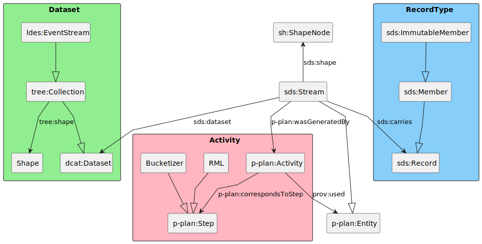

1. Overview
A Semantically Described Stream (SDS) (sds:Stream) is an entity
(rdfs:subClassOf p-plan:Entity),
which carries (sds:carries) a stream of data records (sds:Record)
generated (prov:wasGeneratedBy) as a result of an activity (p-plan:Activity).
It generates a new dataset (sds:dataset),
consisting of the aforementioned records, for the next activity.
This specification uses the P-Plan specification to describe activites from which Streams (sds:Streams) are generated.
Furthermore, the P-Plan specification makes it possible to determine the
lineage of the data which is a crucial part of Linked Data Event Stream.
LDES exposes a stream of RDF members, these members often do not originate from RDF
data but from, for example, sensor observations.
| Prefix | Namespace |
|---|---|
| dcat | https://www.w3.org/ns/dcat# |
| sds | http://semweb.mmlab.be/ns/sds# |
| sh | http://www.w3.org/ns/shacl# |
| p-plan | http://purl.org/net/p-plan# |
| prov | http://www.w3.org/ns/prov# |

2. Smart Data Stream vocabulary
The base URI for the Smart Data Specification’s vocabulary is [https://w3id.org/sds#]() and the preferred prefix is sds:.
The vocabulary exists of one main class sds:Stream a subclass of p-plan:Entity representing a stream of sds:Record.
A Stream (sds:Stream) contains the following properties, extending the properties from p-plan:Entity.
-
sds:dataset: information about the current dataset containing information about license etc. -
sds:carries: information about the what record is being carried.
A Member (sds:Member) contains the following property.
-
sds:shape: contains the shape of the actual member that is carried of the stream.
Note: sds:shape differs from tree:shape. tree:shape indicates the shape of the members when queried from a LDES. sds:shape denotes the actual shape of the members on a sds:Stream.
When bucketising it is not expected that the tree:shape changes but bucketization can add new properties to the sds:Member thus changing the sds:shape.
| Property | Domain | Range |
|---|---|---|
| sds:dataset | sds:Stream | dcat:Dataset |
| sds:carries | sds:Stream | sds:Record |
| sds:shape | sds:Record | sh:NodeShape |
3. Examples
This section is non-normative.
When creating a sds:Stream the user should create a p-plan:Plan indicating the expected transformations on the data stream.
This example goes through a plan that starts from a csv file, transforms it to RDF with a RML Mapper.
This RDF is then bucketized based on the foaf:label property and is lastly exposed as a LDES.
@prefix rdfs: <http://www.w3.org/2000/01/rdf-schema#> . @prefix p-plan: <http://purl.org/net/p-plan#> . @prefix prov: <http://www.w3.org/ns/prov#> . @prefix sds: <http://semweb.mmlab.be/ns/sds#> . @prefix dcat: <https://www.w3.org/ns/dcat#> . @prefix : <#> . <somePlan> a p-plan: Plan ; rdfs: comment "A epic plan to map csv file to a LDES" . <csvLocationVar> a p-plan: Variable ; p-plan: isVariableOfPlan <somePlan> ; rdfs: comment "Location of the CSV file" . : csvLocation #1 rdfs:subClassOf <csvLocationVar>. <rmlConfigVar> a p-plan: Variable ; p-plan: isVariableOfPlan <somePlan> ; rdfs: comment "Location of RML config file" . : rmlConfig #1 rdfs:subClassOf <rmlConfigVar>. <bucketConfigVar> a p-plan: Variable ; p-plan: isVariableOfPlan <somePlan> ; rdfs: comment "Location of RML config file" . : bucketConfig #1 rdfs:subClassOf <bucketConfigVar>. <ldesServerConfigVar> a p-plan: Variable ; p-plan: isVariableOfPlan <ldesServerConfig> ; rdfs: subClassOf <LdesConfig> . : ldesServerConfig #1 rdfs:subClassOf <ldesServerConfigVar>. <streamVar> a p-plan: Variable ; p-plan: isVariableOfPlan <somePlan> ; rdfs: subClassOf <Channel> . : stream #1 rdfs:subClassOf <streamVar>. : stream #2 rdfs:subClassOf <streamVar>. : stream #3 rdfs:subClassOf <streamVar>. <readStep> a p-plan: Step ; p-plan: hasInputVar : csvLocation #1; p-plan: isStepOfPlan <somePlan> ; p-plan: hasOutputVar : stream #1. <rmlStep> a p-plan: Step ; a rmlStep; p-plan: hasInputVar : rmlConfig #1, :stream#1; p-plan: hasOutputVar : stream #2; p-plan: isPreceededBy <readStep> ; p-plan: isStepOfPlan <somePlan> ; rdfs: comment "Map CSV rows to RML" . <bucketStep> a p-plan: Step ; p-plan: hasInputVar : bucketConfig #1, :stream#2; p-plan: hasOutputVar : stream #3; p-plan: isPreceededBy <rmlStep> ; p-plan: isStepOfPlan <somePlan> ; rdfs: comment "Add geospatial bucketization" . <ldesStep> a p-plan: Step ; p-plan: hasInputVar : ldesServerConfig #1, :stream#3; p-plan: isPreceededBy <bucketStep> ; p-plan: isStepOfPlan <epicPlan> ; rdfs: comment "Expose LDES" .
Note: This is my understanding of how p-plan:Variable work, please update if wrong.
Note: This p-plan:Plan does not explicitely inform how to connect these Steps together, see the Connector Architecture for this.
Activities can be generated after running the steps of the plan. These activities are each linked to a corresponding Step.
<readCsv> a p-plan: Activity ; p-plan: correspondsToStep <readStep> ; prov: used [ a void: Dataset ; void: dataDump <file:///data/input.csv> ; ]. <csvStream> a sds: Stream ; prov: wasGeneratedBy <readCsv> ; sds: carries [ a sds: Member ; sds: Shape <sh> ; ]; p-plan: correspondsToVariable : stream #1; sds: dataset [ a dcat: Dataset ]. <rmlProc> a p-plan: Activity ; p-plan: correspondsToStep <rmlStep> ; prov: used <csvStream> , [ rml: Location "somewhere" ; p-plan: correspondsToVariable : rmlConfig #1; ]; prov: startedAtTime "1650886052" . <rmlStream> a sds: Stream ; a sds: Stream ; prov: wasGeneratedBy <rmlProc> ; sds: carries [ a sds: Member ; sds: Shape <sh> ; ]; p-plan: correspondsToVariable : stream #2; sds: dataset [ a dcat: Dataset ]. <bucketization> a p-plan: Activiy ; p-plan: correspondsToStep <bucketStep> ; prov: used <rmlStream> , [ ldes: bucketType "substring" ; ldes: propertyPath foaf: name ; ldes: bucketPath ldes: substringBucket ; ]; prov: startedAtTime "1650889052" . <bucketizedStream> a sds: Stream ; prov: wasGeneratedBy <bucketization> ; sds: carries [ a ImmutableMember; sds: shape <sh> ]; p-plan: correspondsToVariable : stream #3; sds: dataset [ a dcat: Dataset ] <ldesServer> a p-plan: Activity ; p-plan: correspondsToStep <ldesStep> ; prov: used <bucketizedStream> , [ ldes: view "abc.com/epicLDES" ; p-plan: correspondsToVariable : ldesServerConfig #1 ]; prov: startedAtTime "1650889452" .